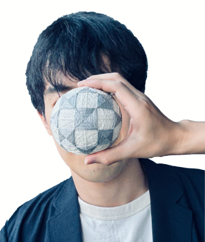

奥山 蛸之助のホームページ

If you have any enquiries regarding my programming or temari, or would like to
make an enquiry concerning
future projects, please do not hesitate to contact me through the following
email address.
所属:
無所属
流派なし
★★★ 最新情報 ★★★
・webサイト
・創作模様てまり
・LINEbot
お問い合わせはメールでご連絡をお願い致します。
※最近、SNS上で奥山蛸之助を名乗るアカウントがあるといった“なりすまし”の報告が寄せられておりませんが、おそらく奥山本人ですので、ご注意ください